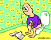

De: La Frikipedia, la enciclopedia extremadamente seria.
De: La Frikipedia, la enciclopedia extremadamente seria. De: La Frikipedia, la enciclopedia extremadamente seria.

|
BORRADO Este artículo NO será borrado porque es una broma frikipédica de mal gusto. Si su autor lo vuelve a crear o quita esta plantilla, será bloqueado por una semana (que miedo...). |

Artículo, normalmente de n00b, que por gracia y obra de el espíritu santo un admin capullo va a parar a un lugar misterioso donde no puede manchar el buen nombre de nuestra amada frikipedia... normalmente dejando aquí los insultos del n00b imbécil hacia el pobre admin que solo cumple con su trabajo.
Porque cada día entran más n00bs faltos de inteligencia a acuclillarse sobre nuestra amada frikipedia y dejar aquí sus regalitos. Pos lo que los pobres administradores deben recorrerla con bolsas de recoger mierda como las de los perros para echar esas cagadas intelectuales a la papelera de donde no habrán de salir... ¡Jamás!
Posiblemente unos unos cabrones corrutos que se dedican a tocar los cojones a los pobres n00bs. Pero también hay quien opina que lo hace el Ratoncito Pérez o los duendes de Papa Noel.
Dependiendo de la parida que hagas puede durar 5 segundos o dos horas... bueno dependiendo de eso y de la borrachera que lleven los admins en ese momento. Además si los pillas en un buen día solo te pondrán unas cuantas plantillas hirientes (nótese que los admins solo están de buen día cuando Nexo les paga... y eso no ha ocurrido nunca).
Posiblemente al culo del goatse un lugar mágico y maravilloso del que no volverán jamás. Hay quien opina que a una enorme papelera sin fondo, otros que a un bujero negro pero ni siquiera los admins. lo saben.
Pues mira amiguito, entre los botones de historial y trasladar hay otros dos botoncitos que ponen respectivamente Proteger y Borrar aunque tú seguramente no los veas porque no eres un admin pringao que tiene que limpiar la mierda de la web. Pues bien, le dan a ese botoncito, un par de clics más y todo rastro del arti desaparece de la faz de la tierra para no volver jamás.
Aquellos que son tan cortos como la distancia de la A a la Z encima de un teclado, los que tienen la gracia tan metida en el culo que no se les ve, los que son de un humor tan fino que se distingue menos que el hilo de pescar, los que tienen esta medallita, los de gente que nos cae mal y un largo etc...
Contrario a lo que se puede suponer, un Noob es en verdad capaz de crear obras de arte por su propia cuenta
| Galería de arte Noob |
|---|
| Aunque este no es su lugar, a veces dan risa... |
| A veces son monótonos... |
| Y a veces algunos usan dos técnicas a la vez para mayor efectividad |
| Nótese la variedad de temas y subtemas que este tenía |
| Este estaba hecho en un sólo renglón, notorio por el espacio de sangría que dejo XDDDD |
| Supongo que cualquiera puede rendir culto a lo que quiera |
| Sinceramente, no he visto artículo que manchara más el nombre de Frikipedia que este |
| Como se ve, a veces la frikipedia es victima de parbadas de noobs |
| Lo que es no valer la pena |

|
| Este ni siquiera lo hizo en su lugar (Nótese "La Frikipedia:") |
| Euro 2008... este todavía se entiende |
| Y esto pasa por no leerse las ayudas ni saber que existe la plantilla {{enobras}}. No habrá piedad para nadie. |
| Posible artículo dirigido al Magnánimo Presidente Chávez (posiblemente Alias Bobba) |
Lo que usted esta a punto de ver no es una broma (una broma de dios o la madre naturaleza tal vez), pero realmente este artículo llego a existir en la frikipedia:
 |
Advertencia: Frikipedia opera quirúrgicamente a sus pacientes. Si cree que puede requerir una operación después de leer este artículo, por favor olvide a su médico y no dude en consultarnos, recomendado por el Doctor House. |
|
|
BORRADO Este artículo será borrado. Si su autor lo vuelve a crear o quita esta plantilla, será bloqueado por una semana. |
| ATENCIÓN Este artículo es ilegible. Su autor se cree que está hablando por el méssenller, y un mono con un rodillo tendría menos faltas de ortografía. Por tanto, hay que editar el artículo revisando la ortografía, para vergüenza de su autor y regocijo de su corrector. |

|
ATENCIÓN Este artículo es simple y llanamente malo. El autor tiene un humor de díficil comprensión para los frikipedistas en general o es que realmente no tiene ni puta gracia. Si crees que puedes mejorarlo inténtalo. |

|
ATENCIÓN El autor de este artículo no aprendió geometría en el colegio, ha leído muy pocos libros en su vida y/o no se ha leído las ayudas. Así que es incapaz de producir un texto medianamente maquetado. Por lo tanto es necesario remendar el artículo. |

|
ATENCIÓN El autor de este artículo es un auténtico borrico. Como no se ha leído las ayudas, se ha saltado a la torera un porrón de normas. Por tanto, hay que modificar el artículo, ya que de no haber nadie que lo modifique será eliminado pronto. |
 Atención, atención: Desorden del copón Atención, atención: Desorden del copón El constructor/editor de este artículo sigue los dictados de su inspiración, y por tanto deja las frases y apartados a medias mientras edita. Es altamente recomendable no leer este artículo mientras dure la edición, so consecuencia de sufrir esguince cerebral. |

|
ATENCIÓN Este artículo no tiene nada que ver con |
| |
Hay frikipedistas que creen que este artículo debería ser fusionado con Hijo de su puta madre. |
|---|

MIRADLO
Este artículo está en La Picota.
Su autor ha escrito un supertruño, que ni viene a cuento ni tiene puñetera gracia.
Aquí queda expuesto para escarnio y vergüenza,
¡para que lo vea todo aquel que ose atreverse a seguir sus pasos!
Si eres su autor y quieres redimirte, haz un acto de contricción y muéstranos tu arrepentimiento aquí

|
IMPORTANTE |
|---|---|
| El autor de este artículo no es muy original y ha tenido que recurrir a la copia de otro artículo de la Frikipedia, de la Inciclopedia o, peor todavía, de la Wikipedia, o solo Monesvol sabe de donde (¡Pero de aquí no es!). Por lo tanto, es necesario "originalizar" el artículo; si esto no ocurre en poco tiempo, este artículo será borrado. |

|
ATENCIÓN Este artículo está en construcción. Su autor puede estar en la hora del bocata o haberlo dejado a medias. Si no eres quien esta trabajando en el artículo ten cuidado con lo que haces. ¡Si eres el editor terminalo ya! |
| Creíble. Este artículo es demasiado creíble para poder permitírsele el paso. Por favor, el autor, o alguien que pase por aquí, meta alguna locura humorística, para terminar de reírme. |

|

|
ATENCIÓN Este artículo es un truño, es sólo un esbozo de un artículo o es demasiado corto o el que lo ha escrito se cree que esto es un vil diccionario. Su autor puede estar bajo los efectos del alcohol o ser un inútil. Quizá haya pistas en la discusión]. ¡Mejora la Frikipedia ampliando, mejorando o ignorando el artículo! |
|  | Muerto El autor de este articulo se fue al WC y murio como el desdichado de aquí a la izquierda (Si non è vero, è ben trovato). |

|
ATENCIÓN Este artículo debería separarse en varios artículos. Ya que o bien habla de varios temas a la vez o que contiene definiciones o es tan extenso que debería ser dividido. Así que entra y corta, fragmenta, despedaza, trincha, escinde, parte, divide, separa, aisla, fracciona, amputa, cercena y secciona el artículo en varios de ellos. Si no sabes como empezar mira la discusión del artículo. Y no olvides desambiguar después. |

|
ATENCIÓN Este artículo es una herejía. Su autor debería ser quemado en la hoguera para purificar su alma. Ha leido poco la Frikipedia y ha soltado una sarta de chorradas sin sentido. Alguien debe corregir el artículo para que no entre en confrontación con el saber frikipédico. |

|
ATENCIÓN Este artículo está huérfano, esto quiere decir, ningún otro artículo enlaza a este artículo. Así déjalo |
| ¿ | ¿Eins? Este artículo es incomprensible. Algún listillo se empeñó en poner cosas que sólo él entiende y ahora nadie sabe de lo que está hablando. Si eres el autor, o sabes de que trata el artículo arréglalo para que quede más claro. |
? |
| ATENCIÓN El autor de este artículo se ha olvidado de enlazar otros artículos y ha perpetrado un Deadend. Hay que dejar así el artículo para que enlace a otros artículos para que nada rediriga a esta mierda |

|
ATENCIÓN Este artículo es fruto de un momento maricona. No es el tipo de artículos que queremos en la Frikipedia ya que consiste sólamente en críticas destructivas hacia algo, sin ánimo de sátira o de risa. ¡Mejora la Frikipedia des-mariconizando el artículo! |

|
PACO!! Esta sección o apartado del artículo es muy mala, por favor mejórala para que este artículo sea la caña. |
| ATENCIÓN El MediaWiki este es un picajoso y pone pegas al título de este artículo. El titulo debería ser Simio antropomorfo. Que lo sepas. |

|
¡¡¡ARGH, MIS OJOS!!! Este artículo está escrito así por algún motivo. Puede contener masivas faltas de ortografía u otros horrores lingüísticos. |
don omar el rey de todo como lo conocempos un idolo no como eso metaleros que dicen que el reggaeton es mierda por que son unos wn sin vida
¿Ahora entiendes por qué se tienen que borrar algunas cosas?
Autor(es):